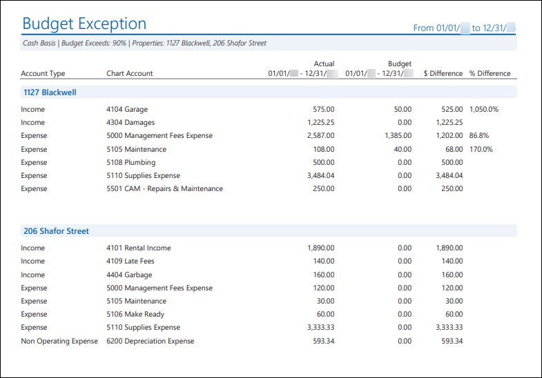
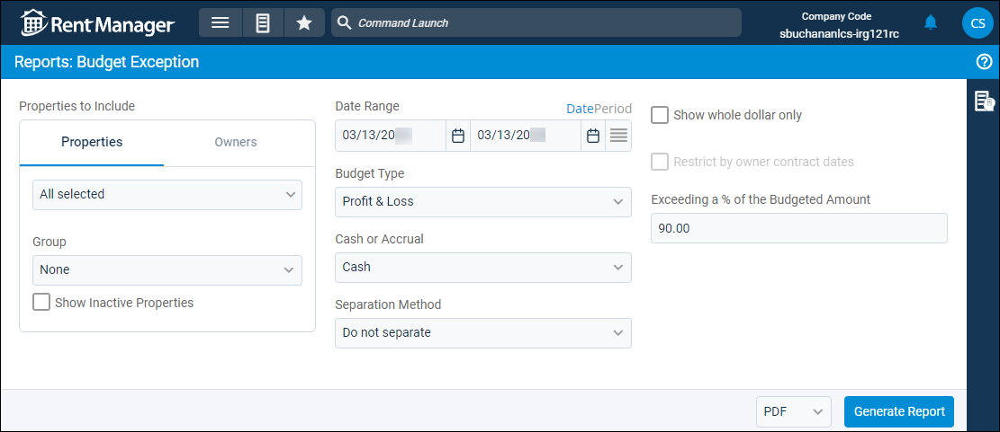
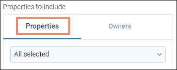

Source: https://rmxhelp.rentmanager.com/Topics/Express/Other/Reports/Budget-Exception.htm
Budget Exception (Report)
The Budget Exception report displays actual general ledger account balances that approach or exceed the amounts budgeted to those same accounts over a selected date range. This report can be used with budgets to determine whether spending has exceeded or is in danger of exceeding the predicted spending for a period.
More Information
The GL start date is considered the financial start date, so any transactions or information dated before the GL start date are not included in the report results.
Related Privileges
| Group | Privilege | Column |
|---|---|---|
| Letter/Email Templates/Reports/Packets | Run reports | Enabled |
| Run accounting reports | Enabled |
Additionally, on the Reports tab, you must have access to Budget Exception.
For more information, refer to Control User Access.
Related Preferences
The default percentage used when determining if the actual general ledger balances are approaching the budgeted amounts is configured in system preferences but can be modified each time the report is generated in the report options. For more information, refer to Budget (System Preferences).
To view the Budget Exception report, do the following:
-
Go to
 arrow_forward Financial Statements arrow_forward Budget arrow_forward Budget Exception.
arrow_forward Financial Statements arrow_forward Budget arrow_forward Budget Exception.
The Reports: Budget Exception page displays. -
Adjust the report options as desired. Each option is described below.
-
Generate the report in your desired file format(s).
Related Preferences
Reports may look different depending on whether or not the Use modernized report style system preference is enabled. For more information, refer to General Report Options (System Preferences).

Report Options
The report options described below determine what data displays in the report.
More Information
Since budget numbers are entered on a per-month basis, the selected date range should cover full calendar months to get the most meaningful results.

More Information
When this report option is selected, reports generate only for owners with active ownerships. If all selected owners currently do not have active ownerships, an error message displays stating that no reports were generated.
For more information on establishing active ownerships, refer to Property Owners (Pop-Up).
Properties/Owners to Include
Check each property or owner to be included in the report. Alternatively, select a property or owner Group. When the Owners tab is selected, results generate only for owners with active ownerships. If all selected owners currently do not have active ownerships, and Restrict by owner contract dates is selected, an error message displays stating that no reports were generated. For more information on establishing active ownerships, refer to Property Owners (Pop-Up).
More Information
Only information related to the properties to which you have access displays. Your access to properties can be managed from your user account or on the property's details page. For more information, refer to Limit Access to a Property.
Optionally, check Show Inactive Properties to include properties that are no longer active.
Date Range
Enter or select the date range to determine the data that displays in the report.
To the right of the Date Range option, you can click Date to manually select a date range, or Period select a date range based on accounting periods.
Set a Date Range
In the Date Range section, set the From and To dates for which the report should examine data.
These fields automatically populate with today’s date. Enter a different date or select a date from the calendar. Alternatively, adjust the dates using the available preset buttons or click  to open more options for setting a date range.
to open more options for setting a date range.
Select an Accounting Period
Related Preferences
To generate the report using accounting periods, the General Ledger Settings (System Preferences) option to Enable accounting periods must be enabled.
Financial reports default to the manual Date view unless the General Ledger Settings (System Preferences) option to Default to accounting periods for financial reports is checked. Enabling this option sets the financial reports to default to the Period view for Date Range.
Configure the following options to determine the period Date Range uses:
| Option | Description |
|---|---|
|
Series |
Select the desired series, as defined in accounting periods. |
|
Single Period |
Select Single Period to generate the report for one accounting period. When this option is selected, you can also select the Year of the period you wish to use and the Period, which allows you to generate the report from the period's Start Date through the period's End Date. |
|
Multiple Periods |
Select Multiple Periods to generate the report across multiple accounting periods. When this option is selected, you can also select a Start Year and End Year or a Start Period and End Period to determine the To and From date for which the report is generated. |
Budget Type
Select a budget type to determine which type of financial information from the properties during the Date Range displays. A budget can be created with either P & L or Balance Sheet selected. For more information, refer to Budget (Page).
| Option | Description |
|---|---|
|
Profit and Loss |
Actual income and expense activity against a budget(s) with P & L applied displays. |
|
Balance Sheet |
Actual asset, liability, and equity account activity against a budget(s) with Balance Sheet applied displays. |
|
PL and Balance Sheet |
Actual financial activity for all general ledger account types against a budget(s) with either P & L or Balance Sheet applied displays. |
Cash or Accrual
This option determines whether the financial activity is calculated on a cash or accrual basis.
| Option | Description |
|---|---|
|
Accrual |
Includes all transactions for which income was earned and expenses were incurred, regardless of whether the payment was received or disbursed. |
|
Cash |
Includes only transactions for which payments are received or made. |
Separation Method
This option becomes available when the Properties tab is selected.

Select one of the following options to determine how the report results are batched:
| Option | Description |
|---|---|
|
Do not separate |
All selected properties are combined into a single report. |
|
Separate by Properties |
Generates a separate report for each selected property. |
|
Separate by Units |
Generates a separate report for each unit associated with the selected properties. |
Show Whole Dollar Only
If checked, general ledger account totals are rounded to the nearest whole dollar (0–49 cents is rounded down, and 50–99 cents is rounded up). Otherwise, the actual amount displays.
Restrict by Owner Contract Dates
This option becomes available when the Owner tab is selected.

Check to display only data that is within the active contract dates for each of the selected owners, regardless of the date range. This option is useful if, for example, your contract with one owner is ending and another contract with a different owner is beginning.
| Option | Description |
|---|---|
|
Checked |
The report filters to display only data within the selected owner or owners' active contract. For example, if the report is generated for 01/01/2026–12/31/2026, and Owner A has an active contract from January to June of 2026, the report displays only data at the properties owned by Owner A from January 2026 to June 2026. |
|
Unchecked |
The report displays current data for any months included in the report date range regardless of owner contracts. |
Exceeding a % of the Budgeted Amount
Enter a Percent to determine how close the actual activity must be to the budgeted numbers to display in the report results.
For example, if an expense account (such as 5100 Maintenance) is budgeted for $1000 and you enter a Percent of 90, the 5100 Maintenance general ledger account displays in the report only if actual activity for the date range has reached or exceed $900.
Related Preferences
If no Percent is entered, the amount entered in system preferences is used. For more information, refer to Budget (System Preferences).
Report Results
The report results are described below including, if applicable, section, column, and subreport or tab descriptions.
Report Header
The report header displays the report name and key information selected in the report options, such as date information and which properties were examined in the report.
Column Descriptions
The columns that display in the report are described below.
| Column | Description |
|---|---|
|
Account Type |
The account type that most closely defines the purpose of the GL account (e.g., Bank, Expense, Equity, etc.). |
|
Chart Account |
Each general ledger account that approached or exceeded the budgeted amounts during the Date Range. |
|
Actual |
The balance of activity in each general ledger account that approached or exceeded the budgeted amounts during the Date Range. |
|
Budget |
The amount budgeted to each general ledger account for the Date Range. More Information Since budget numbers are entered on a per-month basis, this column displays total budgeted amounts for each entire month included in the Date Range, even if the Date Range only includes partial months. |
|
$ Difference |
The difference, in dollars, between the Actual amounts and the Budget amounts for each general ledger account, using the following formula: $ Difference = Actual - Budget |
|
% Difference |
The percent difference between the Actual amounts and the Budget amounts for each general ledger account, using the following formula: % Difference = $ Difference / Budget |